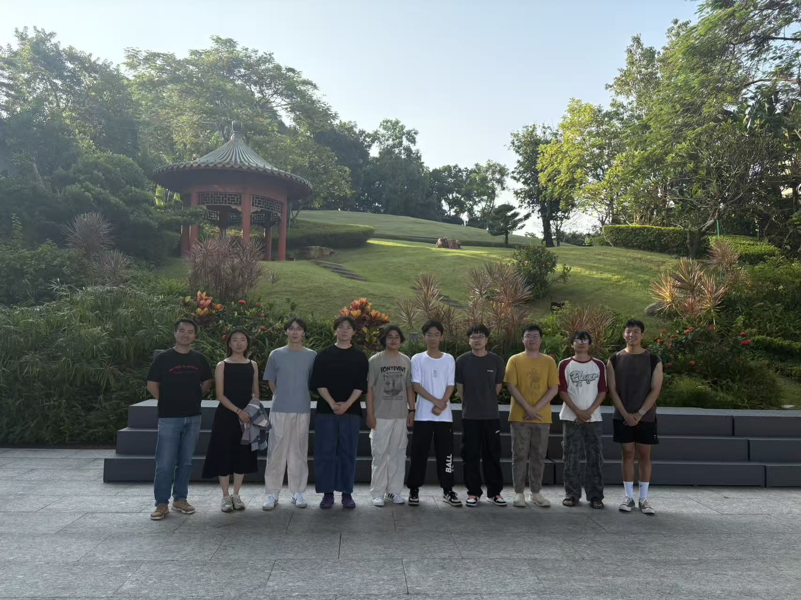
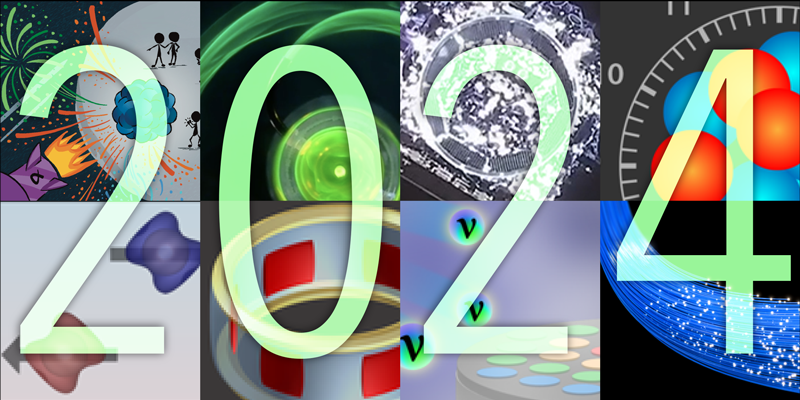

EXPERIMENTAL PARTICLE PHYSICS
Exploring the
invisible
universe.
Neutrinos. Dark matter. The fundamental nature of our universe.
We look for answers with noble liquid detectors.

Small signals.
Fundamental questions.
CUHK · SCHOOL OF SCIENCE & ENGINEERING
THE QUESTIONS THAT DRIVE US
Unseen particles.
Measurable possibilities.
Welcome to the Neutrino and Dark Matter Group at The Chinese University of Hong Kong, Shenzhen.
Led by Prof. Jingqiang Ye, we study dark matter, neutrinos and axions with noble liquid detectors, while developing technologies for the next generation of experiments.
Meet the people behind the scienceOUR RESEARCH
Two experiments.
A shared curiosity.
Dark matter, from deep underground.
Searching for dark matter and rare interactions with a liquid xenon detector at Gran Sasso, Italy.
LNGS · ITALYA new window on neutrinos.
Exploring coherent elastic neutrino–nucleus scattering with reactor neutrinos and liquid xenon technology.
SANMEN · CHINASELECTED PUBLICATIONS
Ideas, put to the test.
- 2026
Challenging spontaneous quantum collapse with the XENONnT dark matter detector
Phys. Rev. Lett. 136, 120201 (2026)
- 2025
Search for Light Dark Matter in Low-Energy Ionization Signals from XENONnT
Phys. Rev. Lett. 134, 161004 (2025)
- 2024
First Measurement of Solar 8B Neutrinos via Coherent Elastic Neutrino-Nucleus Scattering with XENONnT
Phys. Rev. Lett. 133, 191002 (2024)
FROM THE GROUP
Science is a collective pursuit.

OPEN POSITIONS
Bring your curiosity.
We welcome applications from PhD students and postdoctoral researchers.